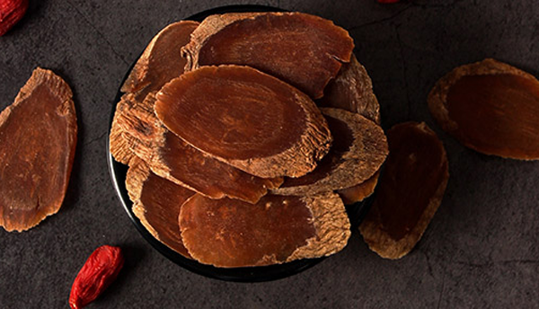

原文连接:https://www.daquan.com/post/12893.html
人参是常见的滋补身体的药材，男人到了40岁之后身体正在逐渐走向下坡，很多男性都会感觉到自己的身体体力没有以前要好了。这都是因为人体气血津液消耗引起的，人参是非常好的补气的中药材。参类都有着很好的滋补功效，除了人参外还有西洋参、白参、红参、玄参、糖参、党参和晒参。
男人可以滋补身体的参
1、人参

人参本身就是滋补的珍贵药材，现代研究确定了人参具有预防慢性疾病，预防老年病的功效。人参有着很好的抗衰老、抗疲惫的功效。男性因为压力非常大，非常容易出现体力透支的情况，所以男性可以多吃人参滋补，人参泡药酒还能起到补肾的功效。人参是非常适合体质虚弱、更年期男性以及压力过大秃发的男性使用。
2、西洋参

西洋参有着滋阴润肺的功效，适合常年抽烟的男士食用。经常抽烟会导致肺功能不健康，并且会引起肺火大，肺阴缺失，所以经常抽烟的男的可以多用西洋参滋补身体。
3、白参
白参是将人参加工后的一种，白参的功效有着补气，健脾，生津。像糖尿病的患者还有体质虚弱的老年人男士可以使用白参来滋补身体。白参可以治疗脾胃虚弱，像大病初愈，感觉没有胃口的可以使用白参来滋补身体，可以帮助身体的恢复还能改善脾胃，增强食欲。
4、红参

红参也是人参经过多重炮制后的一种，红参适合年纪大、体质差、身体虚弱的男士使用。这是因为红参有着很好的增强免疫力、抗疲劳的功效，还能抗癌。但是因为红参性温，非常容易上火，像阴虚火旺、长期高血压的患者最好不要使用人参滋补。
5、玄参

玄参有着滋阴、凉血的功效。玄参适合体内阴虚火旺的男性使用，阴虚火旺会导致咳嗽不止、比常人怕热、非常容易感冒、脸颊两边经常泛红、经常感觉口渴咽干。很多长期抽烟、过度劳累、长期喝酒的男性都有着阴虚火旺的情况，所以可以使用玄参来滋阴、凉血。
6、糖参
糖参也是用人参炮制而来的，糖参没有人参性温，药性更加温和，是滋补元气的好药材。但是要注意，糖参是不适合糖尿病患者使用的，这是因为糖参又叫白糖参是用糖浆炮制的，糖尿病随意使用会引起血糖偏高。
7、晒参
晒参也是人参的一种，晒参的功效有着补元气、安神，适合体质虚弱的男性，脾胃不好经常腹泻、便秘、呕吐的男性使用。
结语：通过上文的介绍，相信大家都了解了关于男人吃什么人参好，人参是非常好的滋补药材，但是要注意人参的使用要根据自身体质的不同选择不同的参来进行滋补。